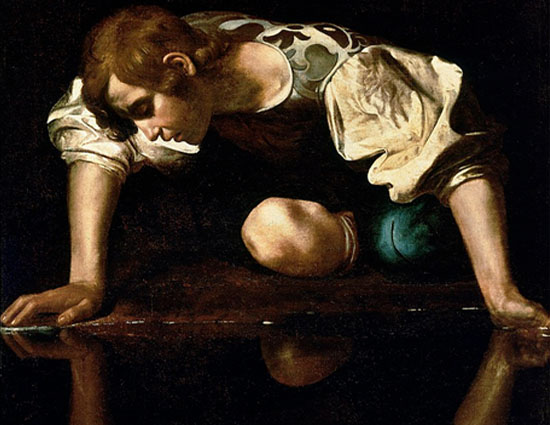

Sliding Doors / Παράλληλες πραγματικότητες
Ένα θεματικό εργαστήριο πυροδότησης της θεατρικής γραφής
από τον συγγραφέα Θανάση Τριαρίδη
Αθήνα, Μάρτιος - Ιούνιος 2018
Το 2ο Εργαστήριο Πυροδότησης Θεατρικής Γραφής, με θεματικό άξονα Τα τελευταία εξήντα λεπτά πριν από τη συντέλεια του κόσμου και υπό την αιγίδα των Εκδόσεων Ευρασία, ξεκίνησε στις 7 Μαρτίου του 2018 και ολοκληρώθηκε στις 12 Ιουνίου του 2018.
Την αρχική προκήρυξη μπορείτε να τη δείτε εδώ.
Διαβάστε την εισαγωγή του συγγραφέα Θανάση Τριαρίδη
Οι δέκα συμμετέχοντες στο 2ο Εργαστήριο ήταν οι εξής:Βανέσσα Βαΐτση, Γιάννης Βερβενιώτης, Κατερίνα Καζολέα, Μάνος Κουνουγάκης, Δημήτρης Νταούλης, Αδαμαντία Ξηρίδου, Αγάπη Ξιφιλίδου, Αντιγόνη Σταυροπούλου, Νικόδημος Τριαρίδης, Ανθή Τσιρούκη.
Από τη δουλειά τους προέκυψαν τα ακόλουθα 13 θεατρικά έργα:
- Βανέσσα Βαΐτση, anima(L)
- Γιάννης Βερβενιώτης, Olivia Bonita
- Κατερίνα Καζολέα, Σιμονέτα
- Κατερίνα Καζολέα, Lemonade
- Μάνος Κουνουγάκης, The Guevara Show
- Μάνος Κουνουγάκης, Mankind
- Δημήτρης Νταούλης, Κανείς δεν φοβάται κανέναν
- Δημήτρης Νταούλης, Μαινόμενος
- Αδαμαντία Ξηρίδου, Η ζώνη του Εστραγκόν
- Αγάπη Ξιφιλίδου, Ίλσα και Ρικ
- Αντιγόνη Σταυροπούλου, Croque Madame
- Νικόδημος Τριαρίδης, Φράνσις ή η Άλλη Πλευρά
- Ανθή Τσιρούκη, INNERROOM